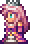
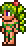

Meet the NPCs
In Terraria, NPCs are friendly characters that provide various services to the player, such as selling items, offering tips, and healing. To attract NPCs to your world, you must create suitable housing for them. Below are some of the most important NPCs you'll encounter in Terraria:
The Guide

The Guide is one of the first NPCs players encounter. He provides useful tips for new players and helps them understand the game's crafting system. He moves in when the world is first created.
The Merchant

The Merchant sells useful items such as healing potions, torches, and other supplies. He moves in once the player has accumulated at least 50 silver coins.
The Nurse

The Nurse can heal the player and remove debuffs. She moves in after the player has acquired at least one heart of life.
The Arms Dealer

The Arms Dealer sells guns and ammo. He moves in when the player has obtained any gun or bullets.
The Demolitionist

The Demolitionist sells explosives such as bombs and dynamite. He moves in when the player has at least one explosive item in their inventory.
Dye Trader

Offers various dyes for coloring items; requires a dye in your inventory to spawn.
Clothier

Sells clothing and vanity items; appears after defeating Skeletron.
Goblin Tinkerer

Refines and re-forges items; found in the cavern after defeating a Goblin Army.
Wizard

Sells magical items and spells; found in the cavern after defeating certain bosses.
Princess
Provides unique items and buffs; has specific spawning conditions related to other NPCs.
Steampunker

Offers technology and gadgets; appears after defeating the Destroyer.
Cyborg

Sells high-tech items; moves in after defeating any mechanical boss.
Angler

Gives fishing quests for rewards; can spawn on floating islands.
Truffle

Sells mushroom-themed items; requires a house in a Mushroom biome.
Pirate

Offers pirate-themed items; moves in after a Pirate Invasion.
Santa Claus

Sells holiday-themed items during Christmas; requires a house and the festive season.
Party Girl

Sells party-related items; can spawn randomly based on certain conditions.
Witch Doctor

Sells voodoo and jungle-related items; appears after defeating Queen Bee.
Dyrad
Sells plant-related items and provides information about the status of corruption; appears after defeating a boss.